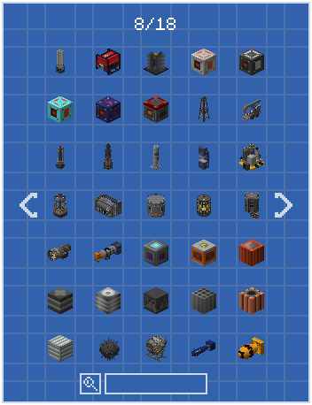
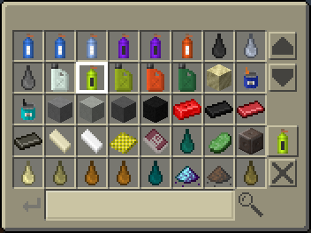
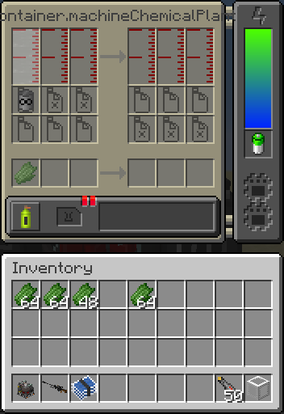

Blogcat's Bob
All about crabs
Carcinization is the phenomenon where many species of crustaceans have independently evolved into a crablike bodyplan. Something about the crab body is so advantageous that many things that aren't crabs, end up being just like crabs.And now for something completely different
In the year of our lord 2017 I have played Factorio for the first time. Not for very long, nor was I good at it, and I didn't pick it back up until years later, but I did manage to get a taste of some of the machines. NTM at that point has no actual automation to speak of, and most machines were made in the crafting table, using microcrafting items also made in a crafting table. Yawn. Playing Factorio gave me the idea of larger, and most importantly universal crafting machines that can combine way more items into an output, and receive items automatically.The Assembler
Recipes can be ambiguous. In order to craft something, a machine needs to know what it needs to make, so it needs a way to figure that out. No shit.For crafting tables that's sort of simple, it just iterates over the entire list of recipes, compensates for mirroring and offsets and then tries to find the first recipe that matches the grid. That's good enough for a manual crafting station where the player deliberately places items into specific slots and where recipes are only checked once every time the slots change, but for automatic machines that's a bit of a clumsy approach, mostly due to there not being any "shape" that determines where what item should land from IO. Vanilla Minecraft later ended up "solving" this with their autocrafter, which is horribly clumsy to use and has absolutely atrocious throughput when using an item sequencer for more complex recipes.
NTM's assembler therefore needed a way to choose a recipe. I wasn't very good at doing GUIs at the time and I just so barely understood network packets, so the easiest to execute solution I came up with was the template folder, an item that acts as a recipe selector which would simply scribble the recipe down on a sheet of paper, which could then be inserted into a machine to tell it what to do. Simple enough.  That's a ton of wasted space right here, you could fit like twice the recipe per page if you wanted.
And then it all fell the fuck apart
The system worked, and that's about all it did. What it did not do was work well, or be convenient. Every recipe change needed a template, needed the template folder in hand, needed paper and dye, needed enough space in the inventory. Often times templates only had to be used once or only on few occasions, so they either got shoved into crates full of nothing but templates, or outright scrapped. The only actual purpose templates could serve beyond recipe selection was automated recipe selection: When sent through a template crate (usually or AE2 autocrafting), the assembler would automatically choose that template, and then eject it again after one crafting cycle. This however is a weird edge case that barey works for most people so it's not exactly a great tradeoff.You have selected: Mister Thrill
Back in 2021 I made the anvil which works quite similarly to the anvil in Terraria: A recipe list you get to choose from, ingredients are taken directly from the inventory and the output is spat at the player. Shrimple enough, selection logic was mostly just reimplemented from the template folder, and the selector was built directly into the anvil GUI. Since the anvil's construction section has no need for slots, there was ample space for that.About half a year ago, not long before the gun update was released, I finally had to rip off the bandaid that was redoing ammo production. I wanted an ammo press, but the three slot design I had in mind for ages just wouldn't work with the many, many edge cases. So I instead opted for a traditional 3x3 crafting grid with arbitrary stacksizes, and, once again, a recipe selector. The 3x3 grid + output slot don't need much space, so the selector got a whole 12 ammo types per page. Not a lot, but still pretty good.
The reworkening
Reworks for the assembler and chemplants have been on the table for quite some time now, right about every aspect could use some improvements. The chemplant for example now has three input slots and three fluid inputs instead of four and two, which allows for a few new types of recipes. Of course, I did consider adding a recipe selector, although the chemplant's GUI is already so cramped that any attempt of adding it would end up either not working at all or looking hideously ugly.If you remember
Years ago, the electrolyzer was made. Yes we are going on another tangent, stay with me. The electrolyzer is really just two completely different machines in the same chassis, and therefore has two GUIs that can be switched though. Opening a GUI from another GUI is quite simple. So what if instead of adding a whole ass recipe selector within the GUI, we make a whole new window for it? But tht's a lot of work, making that many new GUIs, so what if we made the selection GUI generic so it can work with about any machine? What if we made the recipes themselves generic instead of reinventing the wheel every time? After all, most recipes can be described as items and fluids for input and output, a unique name, duration and power demand. Since I'm already rewriting the chemplant and assembler, why not just do that?Getting there
Instead of selling basic UI design as some sort of revelation (it is to me, I am very stupid), let me explain the changes: Instead of needing a template item (inconvenient) to define a recipe with arbitrary input of slots that aren't locked (may lead to overfilling, also permutation checks are laggy), we have a simple button that opens a selector with search bar and quick deselect option that locks the slots to their input, just like it does with the ammo press. And because especially in earlygame, people will use these machines by hand, there needs to be a way to tell them what item belongs where, so we just add a low opacity render of the required item and voila, recipe selection isn't shit anymore.  Oops
We've reinvented basically just what Factorio did, almost 1:1.So what do we learn
- If we optimize hard enough, eventually we reach Factorio. These guys basically already perfected the genre.
- I'm not smart.
< where's the door